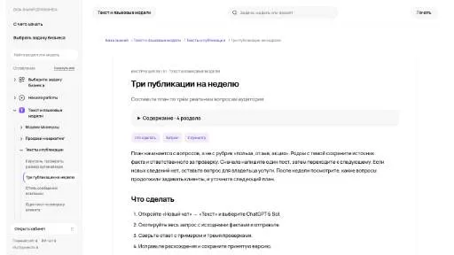
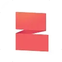

M
MoreViews AIМаркетинг
«MoreViews AI» представлен в разделе «Маркетинг». При выборе проверьте нужную операцию и условия работы с результатом.
Раздел «Для блогеров»: варианты ИИ для этой задачи, описания возможностей и переходы к обзорам. Сравните несколько решений на одинаковом примере.
Возьмите вопрос аудитории и собственные материалы по нему. В Молекуле можно подготовить разные публикации, где каждая раскрывает отдельный аспект темы, а не повторяет предыдущую.
Из моего опыта съёмки в пасмурную погоду предложи три публикации: разбор ошибки, короткое упражнение и ответы на вопросы. Используй только приведённые наблюдения и примеры.

«MoreViews AI» представлен в разделе «Маркетинг». При выборе проверьте нужную операцию и условия работы с результатом.
«QuickVid» помогает собирать и править видеоматериал.
«Thisfoodblogdoesnotexist» готовит материалы для указанных письменных форматов.
«X-Me (x-me.world)» создаёт портретные и аватарные изображения. «X-Me (x-me.world)» также создаёт видеоматериал по заданию.
«11Cast» превращает материал в основу подкаста.
Adobe Podcast помогает записывать разговоры и готовить речь к публикации в браузере. Enhance Speech обрабатывает шум и эхо, а Studio позволяет работать с записью и расшифровкой.
«aiCarousels.com» работает с материалами для социальных площадок.
«Big Room» работает с материалами для социальных площадок.
Сравнивать «Birdie» с другими инструментами раздела «Создание контента» удобнее на одинаковом исходном материале.
Сравнивать «BlogToVideoAI» с другими инструментами раздела «Видео» удобнее на одинаковом исходном материале.
«Drayk It» подготавливает музыкальные варианты по заданию.
Gling помогает редактировать необработанные видео и аудио, убирая паузы и лишние фрагменты. Сервис ориентирован в том числе на подготовку роликов для YouTube. После автоматической обрезки просмотрите переходы между репликами: ускорение записи не должно удалять часть мысли, менять интонацию или превращать оговорку в категоричное утверждение.
Сравнивать «HitPaw Online Video Enhancer» с другими инструментами раздела «Видео» удобнее на одинаковом исходном материале.
«Hotpot Youtube thumbnail maker» подготавливает миниатюру для видеопубликации. Дополнительно «Hotpot Youtube thumbnail maker» помогает подготовить персонализированный видеоматериал.
Сравнивать «Personage» с другими инструментами раздела «Чат-боты и ассистенты» удобнее на одинаковом исходном материале.
Сравнивать «Photo Journey Ai» с другими инструментами раздела «Тексты и контент» удобнее на одинаковом исходном материале.
Pictory используют для превращения подготовленного содержания в видео. Отбор эпизодов и текст в кадре стоит проверять по главной мысли исходного материала.
Revid AI помогает превратить тему или подготовленный материал в ролик для публикации. Важны связность сценария, оформление кадра и итоговый формат экспорта.
Syntx AI предоставляет общий доступ к разным нейросетям через веб-интерфейс и Telegram-бота. Среди моделей представлены языковые помощники и средства визуальной генерации. Пользователь выбирает нужный инструмент внутри агрегатора; условия расчётов рассчитаны на российские карты, включая доступные в России платёжные способы.
VLEX AI собирает текстовые, визуальные и голосовые модели в общем веб-интерфейсе. Пользователь обращается к разным нейросетям из одного аккаунта, выбирая инструмент для нужного материала. Сервис ориентирован на российскую аудиторию и поддерживает оплату картой российского банка.
ytRank AI помогает готовить поисковое оформление видео для YouTube. В наборе предусмотрены популярные ключевые слова, работа над SEO ролика и создание заголовков. Продукт ориентирован на подготовку этих текстовых элементов, соединяя исследование тем с представлением публикации, но не гарантируя определённый рост канала после размещения.
«10LevelUp» подготавливает короткие фрагменты видеозаписи. «10LevelUp» работает с материалами для социальных площадок.
Сравнивать «Aleah AI» с другими инструментами раздела «Создание контента» удобнее на одинаковом исходном материале.
«AutoShorts AI» создаёт видеоматериал по заданию. Дополнительно «AutoShorts AI» помогает подготовить персонализированный видеоматериал.
«Beacons AI» представлен в разделе «Маркетинг». При выборе проверьте нужную операцию и условия работы с результатом.
Сравнивать «Ceeya AI» с другими инструментами раздела «Брендинг» удобнее на одинаковом исходном материале.
Для «Claptools» сначала определите свою задачу и требуемый результат. Карточка относится к направлению «Создание контента».
«Framedrop (framedrop.gg)» создаёт видеоматериал по заданию. «Framedrop (framedrop.gg)» также помогает подготовить персонализированный видеоматериал.
«HitPaw AI Avatar» создаёт портретные и аватарные изображения. «HitPaw AI Avatar» готовит материал с говорящим персонажем.
«Marmof» готовит текстовый черновик по условиям задачи.
Morise помогает авторам YouTube готовить названия, описания и теги роликов. Инструмент также предлагает темы будущих видео и средства подготовки сообщений для сообщества. Его назначение связано с оформлением и планированием публикаций: текстовая работа над видео дополняется идеями, но не подтверждает будущие просмотры или поисковую позицию.
«Taggy» работает с материалами для социальных площадок.
Для «Typpo» сначала определите свою задачу и требуемый результат. Карточка относится к направлению «Видео».
Сравнивать «Vatic AI» с другими инструментами раздела «Видео» удобнее на одинаковом исходном материале.
«AI YouTube Description Generator» помогает подготовить персонализированный видеоматериал.
«aiKTP» готовит текстовый черновик по условиям задачи. «aiKTP» помогает с задачами поискового продвижения.
«Article Forge» готовит текстовый черновик по условиям задачи. Дополнительно «Article Forge» помогает с задачами поискового продвижения.
Canva объединяет редактор макетов и инструменты ИИ для текста и изображений. Подходит для оформления публикаций, презентаций и материалов с редактируемыми слоями.
Catfishes создаёт изображения женских ИИ-персонажей с фотореалистичной подачей для социальных публикаций. Продукт ориентирован на художников и авторов контента, которым нужен генерируемый визуальный образ. Такие картинки относятся к созданным персонажам: реалистичный вид изображения не подтверждает существование человека или подлинность представленного профиля в социальных сетях.
«Chord.pub» готовит текстовый черновик по условиям задачи.
Podium помогает авторам подкастов подготавливать материалы по выпуску с помощью ИИ. Инструмент создаёт расшифровки и главы, а также фрагменты и публикации для соцсетей. Генерация ключевых слов дополняет работу с содержанием, связывая исходную запись и сопроводительный контент для слушателей.
SitesGPT создаёт персональные сайты с помощью ИИ и предлагает визуальные шаблоны. Текстовое направление охватывает материалы для блогов, резюме и профилей LinkedIn. Продукт связывает подготовку страницы с созданием собственного представления, где оформление и содержание используются вместе для размещения сведений о человеке или его профессиональной работе.
«Steve AI» создаёт видеоматериал по заданию. Дополнительно «Steve AI» помогает подготовить персонализированный видеоматериал.
«Voicemod» преобразует звучание голоса.

Zubtitle представляет собой онлайн-редактор для подготовки видео к публикации в соцсетях. В нём предусмотрены автоматическое получение субтитров и настройка их оформления. Пользователь также может менять размеры кадра и обрезать ролик, сочетая текстовое сопровождение с адаптацией исходного видео под выбранный формат публикации.
2Short AI извлекает короткие клипы из длинных роликов YouTube с участием ИИ. Автор может подготавливать фрагменты для соцсетей и других площадок. Продукт относится к переработке видеоматериала, связывая содержание исходной записи с новым форматом представления выбранного эпизода аудитории.
«AIVideoGenerator.me» создаёт видеоматериал по заданию. «AIVideoGenerator.me» также помогает подготовить персонализированный видеоматериал.
«BHuman» создаёт видеоматериал по заданию. «BHuman» помогает подготовить персонализированный видеоматериал.
Страница 2 из 3